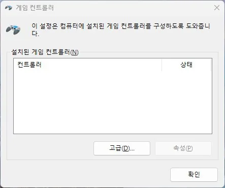

입력장치
게임패드·컨트롤러 인식 안 됨 원인과 점검 순서
게임패드·컨트롤러가 Windows나 게임에서 인식되지 않는 경우
게임패드 인식 문제는 Windows 자체에서 인식이 안 되는 경우와, Windows에서는 인식되는데 특정 게임에서만 안 되는 경우로 나뉩니다. 이 둘은 원인과 해결 방법이 완전히 다릅니다.
Windows의 게임 컨트롤러 설정이나 블루투스 장치 목록에서 먼저 패드가 인식되는지 확인하세요. 여기서 인식되지 않는다면 드라이버, 배터리, 케이블·동글 문제일 가능성이 큽니다.
Windows에서는 인식되는데 특정 게임에서만 조작이 안 된다면, 그 게임의 입력 장치 설정이 키보드로 고정되어 있거나 컨트롤러 방식(XInput/DirectInput)이 맞지 않는 경우가 대부분입니다.
이 가이드가 필요한 상황
- Windows 설정에서 패드 자체가 목록에 보이지 않는다.
- Windows에서는 인식되는데 게임 안에서는 키보드로만 조작된다.
- 블루투스 연결은 되는데 게임에서 반응이 없다.
먼저 확인할 항목
- Windows 인식 여부 확인 — 설정 > 블루투스 및 장치(또는 게임 컨트롤러)에서 패드가 목록에 있는지 확인하세요. 실행창에서
joy.cpl을 입력하면 게임 컨트롤러 목록을 바로 열 수 있습니다.
- 게임 내 입력 장치 설정 확인 — 게임 설정 메뉴에서 입력 장치를 컨트롤러로 직접 전환하세요.
- 블루투스 페어링 재설정 — 기존 페어링을 삭제하고 배터리를 확인한 뒤 처음부터 다시 연결하세요.
- 다른 게임·테스트 화면으로 교차 확인 — 다른 게임이나 Windows의 컨트롤러 테스트 화면에서 확인하세요.
원인을 더 정확히 나누는 방법
XInput과 DirectInput 차이
Xbox 계열 패드는 대부분 XInput 방식이고, 일부 서드파티 패드나 오래된 게임은 DirectInput을 사용합니다. 두 방식이 게임과 맞지 않으면 패드가 인식되어도 특정 키가 작동하지 않을 수 있습니다.
키보드와 패드가 동시에 인식될 때
일부 게임은 키보드와 패드 입력이 동시에 감지되면 키보드를 우선하도록 설계되어 있습니다.
확인 결과에 따른 다음 단계
- Windows에서부터 인식이 안 될 때 — 드라이버, 배터리, 케이블·동글 순서로 확인하세요.
- Windows에서는 되는데 게임에서만 안 될 때 — 입력 장치 설정과 XInput/DirectInput 호환 여부를 확인하세요.
- 블루투스 연결 자체가 불안정할 때 — 페어링을 삭제하고 새로 연결하거나 유선으로 바꿔 비교하세요.
피해야 할 실수
- Windows 인식 여부 확인 없이 바로 게임 설정만 계속 바꿔보는 것
- 배터리 부족 가능성을 확인하지 않고 드라이버만 재설치하는 것
자주 묻는 질문
- 유선으로 연결하면 항상 더 안정적인가요? 유선 연결이 블루투스보다 지연과 연결 끊김이 적어 비교 기준으로 유용합니다.
- 패드가 진동은 되는데 버튼 입력이 안 되면요? 게임의 컨트롤러 설정에서 입력 방식을 바꿔보세요.
- 여러 게임에서 동시에 문제가 있으면요? Windows나 패드 자체의 문제일 가능성이 높습니다.
최종 검토일: 2026-08-07